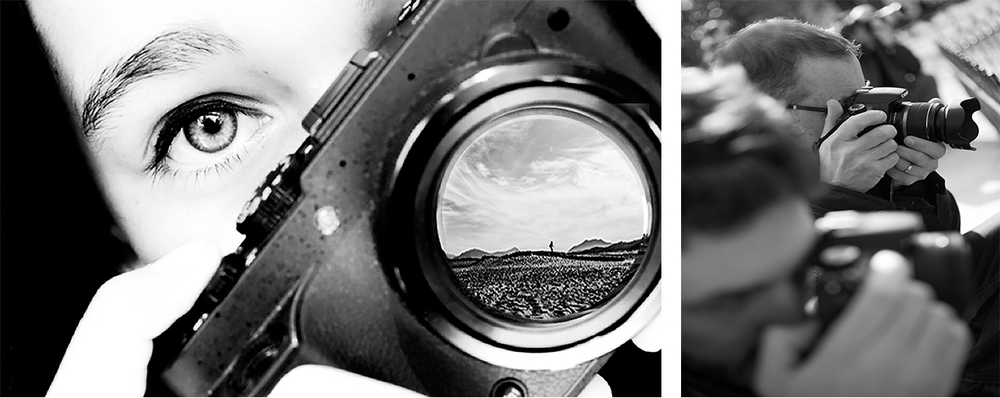
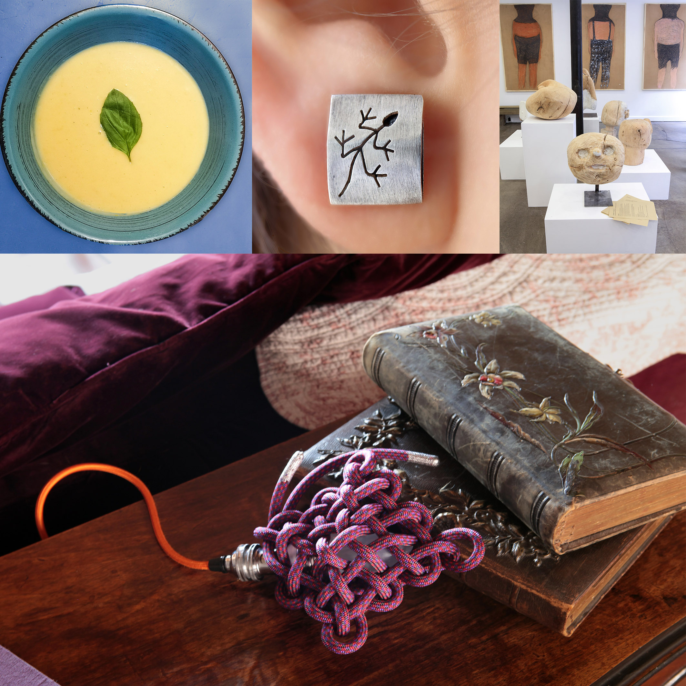

STAGES DE PHOTOGRAPHIE TOUS NIVEAUX
Depuis plus de dix ans, je transmets cette passion en donnant des cours de photographie. Partager, conseiller, accompagner fait partie intégrante de ma démarche, nourrie par l'expérience et l'envie de rendre la photographie accessible, vivante et sincère.
Ce stage est ouvert à tous les niveaux de la pratique photographique, que vous soyez débutant ou photographe confirmé.
Le principe du stage individuel est de répondre précisément à ce que vous recherchez. Je mets à votre service mes années de photographie professionnelle et je vous partage des astuces de pro.
Avant le stage, on se contacte afin de définir ce que nous aborderons ensemble durant les 3 heures. Portrait, macrophotographie, noir et blanc, prise en main de votre appareil : autant de sujets que la photographie propose.
Il vous faut un appareil photo compact, bridge ou reflex disposant de la priorité diaphragme (A ou Av) et de la priorité vitesse (S ou Tv).
« J'ai déjà eu la chance de partager ma passion de la photographie avec plus de 2000 stagiaires. Alors pourquoi pas vous ! »

UNE FORMATION PHOTO ADAPTÉE À TOUTES LES ENTREPRISES
Que vous soyez une grande entreprise, une PME ou une micro-entreprise, gagnez en autonomie pour créer des visuels professionnels.
Réalisez enfin vous-même des photographies de qualité pour gagner en réactivité.
J'étudie vos besoins et votre matériel existant, vous conseille sur les achats ou l'aménagement, puis j'accompagne vos équipes lors d'une formation pratique de 4h pour apprendre à réaliser des photos efficaces, cohérentes avec votre image et prêtes à être utilisées sur tous vos supports de communication.
